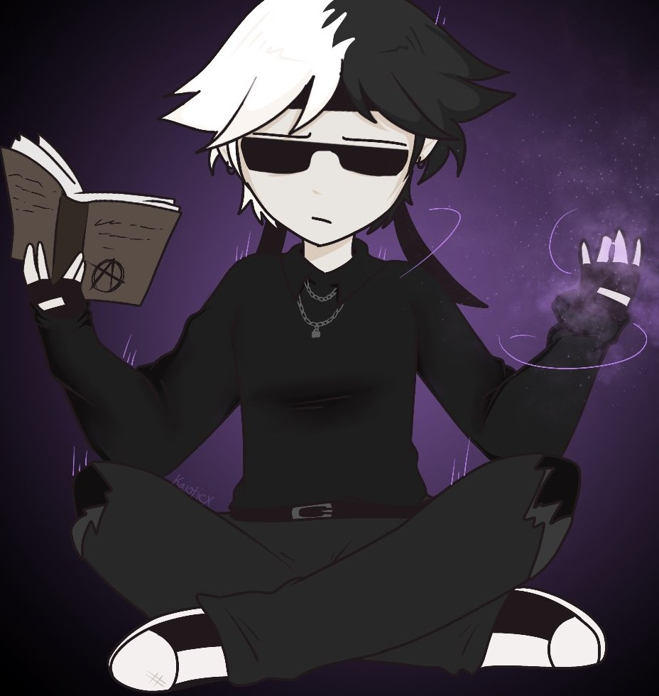

- The begginning of Proxy -
|  |
When Proxy came into play, we wanted someone to match his energy. Eventhough he isn't really the energetic type we thought it would be nice to give him someone the complete oppisite. We wanted him to be the friend that would ignore and urge someone to continue their playful habits, and also keep them in check. We wanted him to be somene to hype up his friend and keep them going so that no one would be stuck or stop at a crossroad. When we were thinking about how we wanted him to look like we came to an agreement to make him look like a slight sorcerer, which is why his right hand is surrounded with particals and his left hand is holding a spell book. |